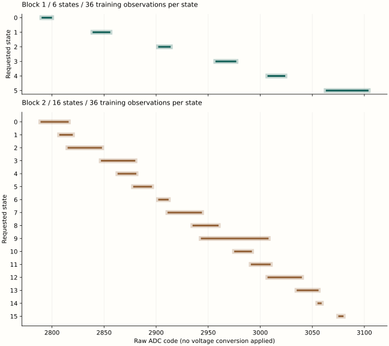

Result of the returned run
Native bus access and SD recording produced recoverable evidence. Six-state validation included recognition errors; sixteen-state training produced overlapping bands.
| Block | States | Training | Validation | Outcome |
|---|---|---|---|---|
| 1 | 6 | 216 / 216 | 432 / 432 | 417 correct, 1 mismatch, 14 unresolved |
| 2 | 16 | 576 / 576 | 0 / 3,072 | Calibration rejected: overlapping bands |
| 3 | 16 | 0 / 576 | 0 / 3,072 | Not attempted |
| 4 | 6 | 0 / 216 | 0 / 432 | Not attempted |
Every acquired row reports successful sampling and operating-condition checks. Initial and final control readbacks match the requested code in all 1,224 rows. The preflight records GPIO takeover and a raw ADC observation of 2,791. The completion checkpoint records successful pin-route release. These are device-returned observations interpreted through the installed instruction sequence.
Acquisition lasted 31.556841 s according to the recorded 54 MHz counter. The final journal section began 187.379860 s after trial entry. That is not a measurement of the full powered interval or the final sector’s completed readback. Actual powered duration and boot count were not reported for this return.
Training bands and recognition
Each state has 36 training observations. The six-state bands are disjoint; thirteen of the fifteen adjacent sixteen-state band pairs intersect. The two-count guard remains the declared parameter. No band was changed after validation.
{kind=link}

| Role | Correct | Wrong state | Unresolved |
|---|---|---|---|
| Predecessor | 207 | 1 | 8 |
| Destination | 210 | 0 | 6 |
The one wrong classification is ordinal 382: requested state 3, raw observation 3,008, recognized state 4. Fourteen readings fall outside every frozen band. An unresolved result’s zero-valued symbol field is not recognition of state zero; its status is 5.
The independent reader reproduces the frozen six-state bands, every classification and the report totals from raw records. The first sixteen-state calibration fails the disjoint-band condition, consistent with acquisition status 3 in failure domain 2. The remaining 7,368 scheduled observations are unattempted.
Training extrema and candidate bands
| State count | State | Minimum | Maximum | Guarded interval |
|---|---|---|---|---|
| 6 | 0 | 2790 | 2800 | 2788–2802 |
| 6 | 1 | 2839 | 2856 | 2837–2858 |
| 6 | 2 | 2902 | 2914 | 2900–2916 |
| 6 | 3 | 2957 | 2977 | 2955–2979 |
| 6 | 4 | 3007 | 3024 | 3005–3026 |
| 6 | 5 | 3063 | 3104 | 3061–3106 |
| 16 | 0 | 2789 | 2816 | 2787–2818 |
| 16 | 1 | 2807 | 2820 | 2805–2822 |
| 16 | 2 | 2815 | 2848 | 2813–2850 |
| 16 | 3 | 2847 | 2880 | 2845–2882 |
| 16 | 4 | 2863 | 2881 | 2861–2883 |
| 16 | 5 | 2878 | 2896 | 2876–2898 |
| 16 | 6 | 2902 | 2912 | 2900–2914 |
| 16 | 7 | 2911 | 2944 | 2909–2946 |
| 16 | 8 | 2935 | 2960 | 2933–2962 |
| 16 | 9 | 2943 | 3008 | 2941–3010 |
| 16 | 10 | 2975 | 2992 | 2973–2994 |
| 16 | 11 | 2991 | 3010 | 2989–3012 |
| 16 | 12 | 3007 | 3040 | 3005–3042 |
| 16 | 13 | 3035 | 3056 | 3033–3058 |
| 16 | 14 | 3055 | 3059 | 3053–3061 |
| 16 | 15 | 3075 | 3080 | 3073–3082 |
Question and method
Question. Can AArch64 SEIGRASM reassign the PMIC bus pins, perform its own acknowledged register transactions and fresh ADC acquisitions, and then establish and recognize six and sixteen voltage levels over the same declared control interval?
Hypothesis and source basis. The public BCM2712 pin definitions identify GPIO and BSC_M2 selections for AON SGPIO 4/5. The GPIO register definitions provide direction and data access. These suggest that disconnecting BSC_M2 at the pin selectors permits SEIGRASM to generate its own I2C transactions. Actual mapping, input visibility, pull-ups and firmware behavior remain physical questions. No software ownership flag is accepted as evidence of a hardware handover.
- Enter at EL2, bind the observed counter frequency, initialize direct SD access, and verify the initial configuration record.
- Record the initial pin selectors and GPIO observations before changing them. Observe temperature and CPU cycles over an architectural-counter interval.
- Require the expected BSC_M2 selectors and an observed idle interval. Release both GPIO directions, clear the selected output latches, select GPIO, and verify the resulting route and line levels.
- Use project-owned I2C instructions to read the original core-voltage control and acquire a fresh PMIC ADC result. Transitions sink or release a line; they never drive it high. Repeated START, ACK/NACK, clock stretching and route-interference checks follow the I2C electrical transaction specification.
- Persist the preflight outcome. If the prerequisites succeeded, acquire both conditions in order 6, 16, 16, 6: 8,592 scheduled observations, including training and ordered-pair validation. Recognition receives the raw observation and frozen calibration bands independently of the requested state.
- Observe operating conditions before each sample. Restore the original voltage after each block or acquisition failure. Attempt pin-route restoration, restore the cycle-counter controls, and persist the completion checkpoint, acquisition report, bands and attempted rows.
Operating proposal. Use control codes 90 through 105, corresponding to a candidate 0.750–0.825 V interval under the inferred DA9091 mapping. Request an initial 1.5 GHz CPU setting in the existing loader configuration; require measured interval-average frequency between 1.0 and 1.55 GHz before each sample. Require valid raw thermal code 728–818, approximately 0.1–49.6 °C under the published conversion. Preserve raw observations. Use a 1 ms settling proposal and a two-count calibration guard; these are declared experimental parameters, not measured uncertainty or guaranteed settling time.
Declared criterion. Both blocks of each condition must calibrate, include every scheduled trial, recognize every valid predecessor and destination correctly, and complete restoration and storage verification successfully. Invalid or unresolved observations prevent a pass.
Preliminary voltage-range observations
The repeated range acquisition of 16 September 2026 found six separated voltage ranges under firmware-mediated operating-point selection and ADC reporting. Its first within-boot test classified 71 of 72 held-out readings correctly; a profile frozen before an independent boot classified 90 of 108 readings correctly. Both declared criteria failed. These observations motivate per-run calibration and tests across independent boots. They do not establish direct PMIC access or qualify the present SEIGRASM implementation.
The original apparatus and capture index preserves the two returned acquisitions and their source provenance. The present comparison uses direct register controls and raw ADC codes, so its bands and acceptance results are assessed from its own measurements.
Related concepts: electrical state, calibration and recognition, native journal.
Apparatus and preparation
One Raspberry Pi 5, AArch64 at EL2, with the SD as loading and acquisition medium. The initial ROM/EEPROM loader remains a dependency. The payload uses literal SEIGRASM opcodes and direct GPIO/I2C and SD operations. No persistent boot firmware was rewritten.
Preparation, 2026-09-24. The SD contains candidate 318B87663DD4. The complete 64 MiB readback matches SHA-256 4bc18deccb0d1b3233f81a69eafdbf5abca69140a6723d29344011cf383f7035. The manifest, 172-check software validation, installation record and artifact hashes identify the image and preserved sources. These artifacts preserve the pre-run candidate and software validation separately from the returned physical evidence.
Physical procedure. Insert the SD into the powered-off test Pi, apply power once and leave it uninterrupted for a 30-minute observation window. Then remove power and return the SD for read-only acquisition. The window allows for the slow, fully read-back SD journal; it is not proof of completion. Completion and actual timing are assessed from returned records.
Implementation and provenance. Experiment sequence, pin takeover/restoration, electrical transitions, operating observations, sample supervision, SD packaging, and the frozen source manifest define the current implementation. Literal opcode words are copied into the payload; no foreign target compiler or assembler produces them. PC emulation supplies device responses for validation. Source hashes and installed-image identity accompany the preparation record.
Returned evidence and integrity
The identified SD was opened read-only. Two complete 64 MiB reads produced the same SHA-256. Both installed boot files, config.txt and seigr.bin, are byte-identical to the preparation image.
The journal contains 3,958 consecutive valid records across sections 1, 6, 7, 8, 2, 3, 4 and 5, followed by 28,746 unchanged empty reservations. Run identity, senary fields, ordinals, section lengths, padding and CRC checks pass. No record gaps were found.
Seven sectors outside the journal differ. The returned FAT volume includes a System Volume Information directory. Those filesystem changes are preserved separately from target measurements; neither their timing nor their author is inferred from this capture.
Capture identity and reproduction
Returned image SHA-256 198f630541e5544fef5fd9fc50f7b2cdf60a2ec034f1f02382448e8042ae17ea
Journal SHA-256 0c16c30fd077cedc6b45c9e05275f681c41386aae043d76fb5aad7a68b1eebf6
The final trial record reports acquisition failure with the earlier sections verified. Its own persistence is observable in the recovered sector; completion of its subsequent target readback remains unproven.
Interpretation and next questions
Established in this run: the candidate entered the native acquisition path, recorded direct bus takeover, obtained control readbacks and raw ADC observations, attempted restoration, and returned a coherent SD journal. Recorded CPU-frequency observations span 1,499,973,222–1,500,027,995 Hz. Raw thermal codes span 759–772 in the operating-condition report.
Criterion: neither state-count condition meets the full comparison criterion. The six-state block includes one wrong and fourteen unresolved classifications; its second block was not reached. The sixteen-state condition fails calibration before validation. This outcome applies to the installed procedure and settings; it does not establish a general six-state or sixteen-state physical limit.
Unresolved: the recovered ADC codes alone cannot distinguish supply variation, settling behavior, interference or acquisition defects. Absolute voltage/current accuracy and complete firmware exclusion were not measured. Widening bands after seeing the result would change the declared test and can increase overlap.
Next investigation: characterize repeated raw reads and the conversion-completion sequence at fixed control codes, retain the individual ADC result octets, then test declared settling intervals with unchanged classification rules. That can distinguish observation-path issues from insufficient state separation before another complete comparison. The declared follow-up is six-state stability and acquisition integrity. The returned candidate and its results remain unchanged.
The experiment supplies evidence for the silicon-access foundation. It does not establish multivalued CPU arithmetic, boot-firmware replacement, or Hyphos-made Seigsit creation.